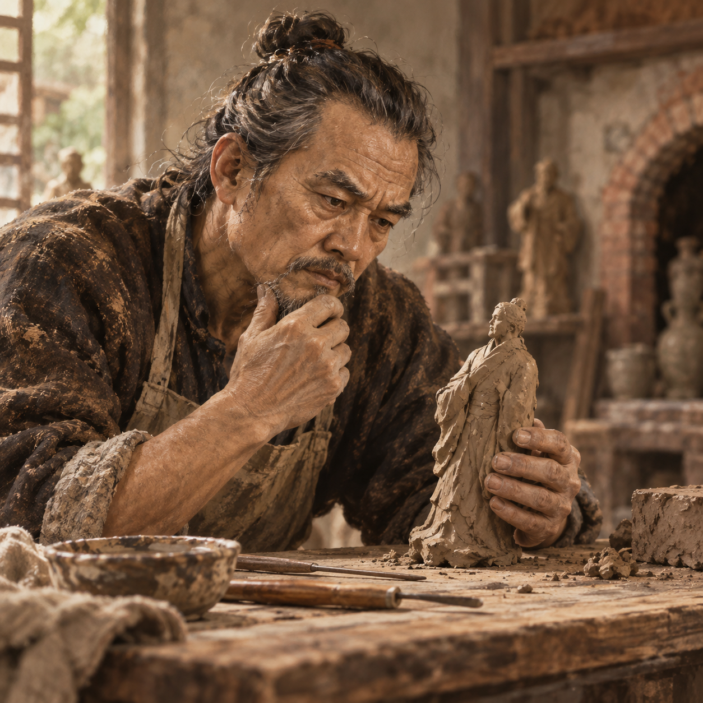
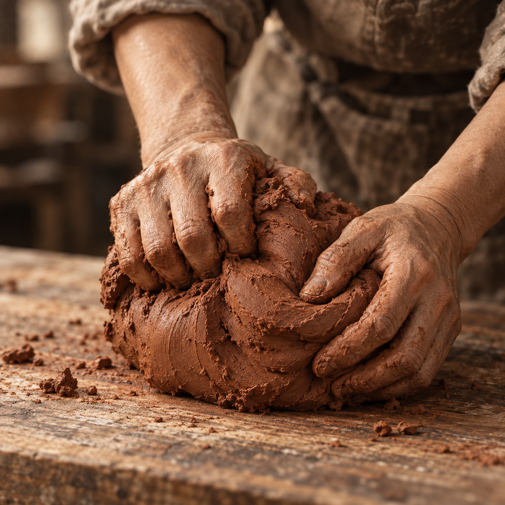
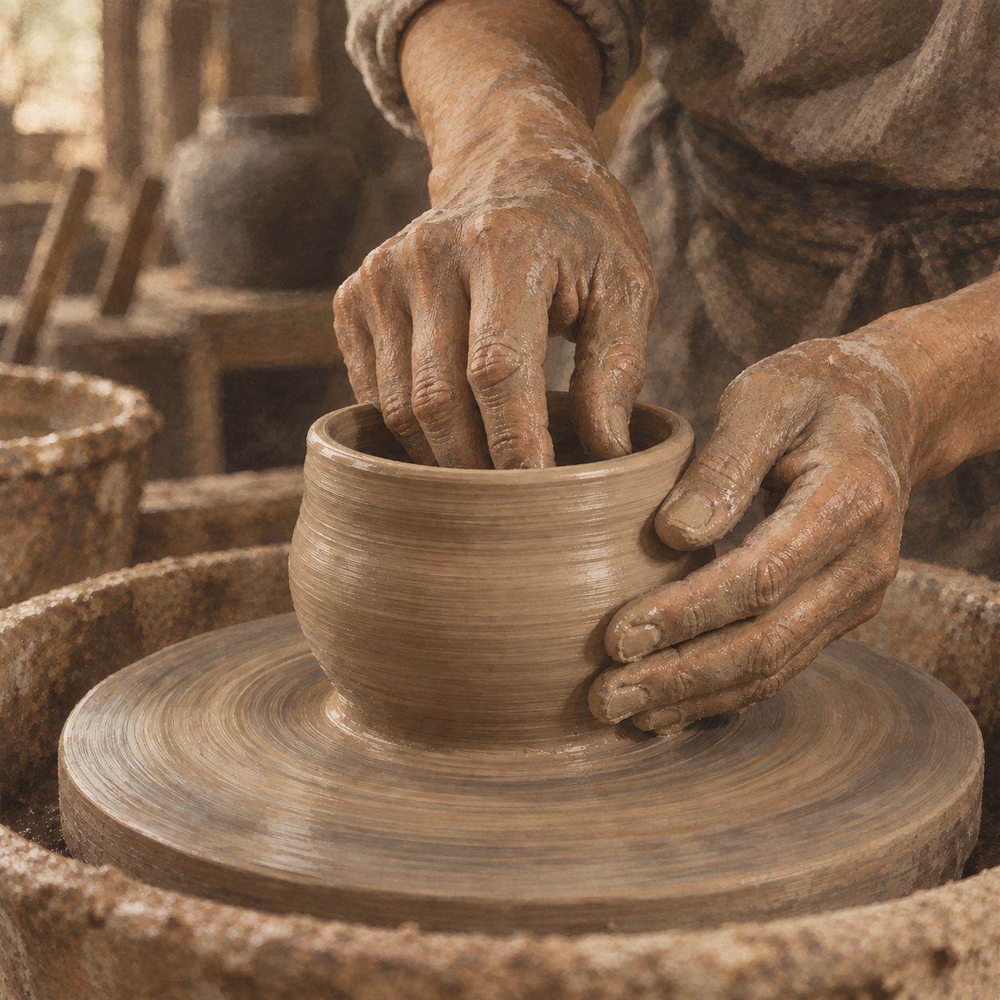
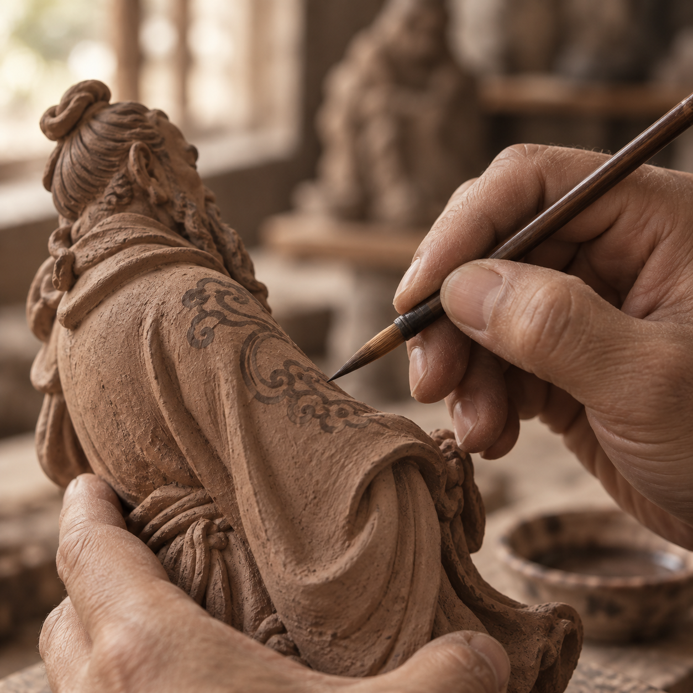
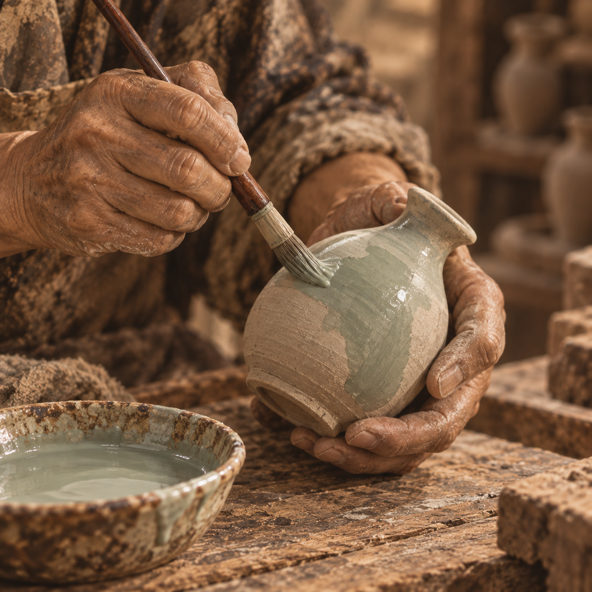
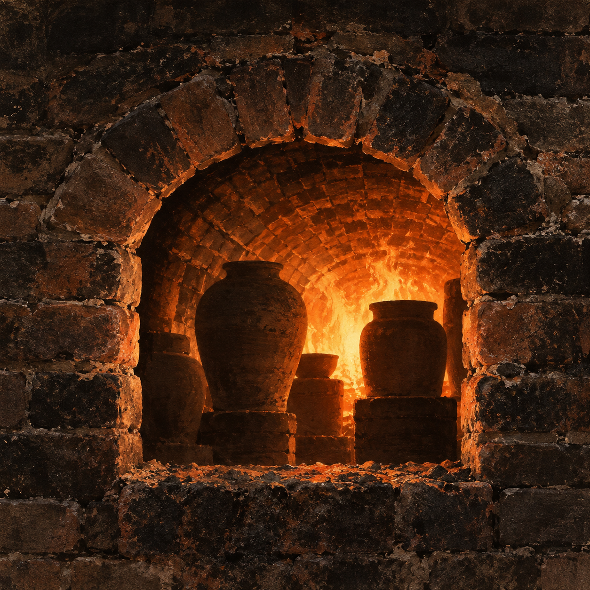

FOSHAN · SHIWAN
土与火，造就生活之美Clay and Fire Shape a More Human World
石湾
一座仍在生长的
陶窑社区
石湾陶
生活的艺术
窑火之外，
石湾仍在继续。
Beyond the Kiln Fire,
Shiwan Lives On.
火焰会停息，手艺仍在人的手中继续。
在南风古灶，陶与火仍是日常。
The fire may rest, but the clay goes on.
In people’s hands, Shiwan’s story continues.
泥土不语
火焰有声
来石湾，走一段与陶有关的路
A Visitor Route Through the Living Pottery Town
- 看窑See the Kiln
- 进古窑Explore the Ancient Lane
- 看陶艺Watch the Pottery Making
- 选一件石湾公仔Choose a Shiwan Figurine

带走一段岭南记忆
看窑 → 进古窑 → 看陶艺 → 选一件石湾公仔
从明代开始，窑火仍在继续。
南风古灶依坡而建，顺坡延伸，窑体呈长条状。自明代正德年间建窑以来，窑火绵延不绝，承载着南丰的制瓷传统与地方记忆。
上与火
造就日常
也留下山河

南风古灶龙窑剖面示意图（非实拍）Diagram of the Nanfeng Kiln
(Long Kiln Profile, Illustrative Only)
(Long Kiln Profile, Illustrative Only)
 烟囱（出烟口）
南向窑门（进火口）
窑火行进路径
烟囱（出烟口）
南向窑门（进火口）
窑火行进路径
生成式线稿示意，非遗址测绘或比例复原；具体结构以现场为准。
1506—1521建于明代正德年间
2001公布为全国重点文物保护单位

泥与人间
在南风窑，陶不是遥远的文物，而是仍在发生的生活。
从一团泥土，到一件有温度的作品，
是手、时间与火的共同完成。
火候，由师傅经验掌握。
- 01构思创作

- 02泥料炼制

- 03成形

- 04装饰

- 05上釉

- 06龙窑煅烧

延续中的手艺
石湾陶的生命力，在于一代代匠人的实践与体会。泥性、火性、气候、经验，这些看不见的知识，通过双手传递，也在每一次创作中被重新理解。
HUMAN HANDSGIVE CLAY A LONGER LIFE.
现场影像 · 哔哩哔哩
 参考图裁切封面；播放时载入哔哩哔哩原视频
参考图裁切封面；播放时载入哔哩哔哩原视频